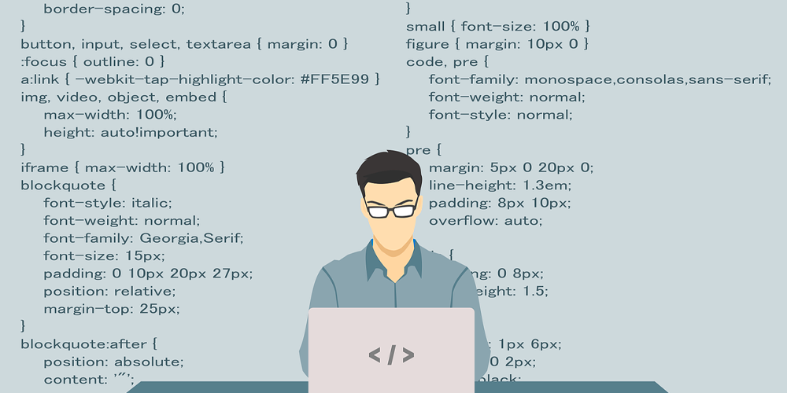

Envie d'escapade ? TravelHome !
Lors de vos voyages, êtes-vous plutôt confort et services au sein d’un bon hôtel, ou plutôt liberté et casanier avec une location de particulier ? Deux écoles assurant de bonnes vacances ! De nos jours les sites de location de biens entre particuliers sont nombreux, que ce soit AirBnB ou Booking.com, les choix sont multiples. Lors de mon apprentissage au sein du Campus Ynov, un de nos projet consistait à créer notre propre site de voyage entre particuliers, dans un style similaire à AirBnB. Je vous ferai part de la conception du site dans ses moindres détails.

Projet et possibilités
Concevoir un site dans son intégralité n’est pas une mince affaire quand on débute. Différentes possibilités s’offrent à nous : utiliser un éditeur de site en ne remplissant que son contenu sans se soucier d'écrire le code. A l’inverse on peut créer le code de A à Z ou utiliser des modèles existant nommés Template. Pour la création de celui-ci, notre binôme a choisi de partir sur ce format de Template. Les fonctionnalités que nous cherchions devaient être similaires à celles du marché déjà en place, à savoir la possibilité de trouver un logement dans la ville de son choix, de choisir entre les différentes propositions d’annonces des particuliers mises en location enfin de réserver pour soi et ses amis ou sa famille aux dates qui conviennent. Je vous ferai part de la conception détaillée ainsi que des différents jalons qui ont marqué ce projet peu après.
Entre conception et réalisation
La plus grande peur des développeurs se situe face à la feuille blanche. Le développement informatique est un peu comme être écrivain. Il faut savoir trouver les mots pour exprimer au mieux son idée voire la représenter. Les premières semaines de travail, mon collègue et moi, nous sommes tournés vers l’aspect visuel de notre site. C’est avec l’aide d’un design, que l’idée que nous avions, a su prendre forme : coupler cette maquette avec une Template. L’idée principale était là. Nous avons ensuite cherché à mettre en place les fonctionnalités que nous voulions dans le site, comme celles décrites précédemment. C’est grâce aux différents langages du web que ce projet est devenu réalité. Entre HTML, CSS où JS en passant par PHP, note site a pris forme semaine après semaine et à la fin de l’année, TravelHome est né. Même si ce projet a pu aboutir, il n’a cependant pas été mis en ligne et n’est actuellement pas visible sur internet.
Alors si vous voulez partir en voyage, recherchez-nous, vous seriez conquis !